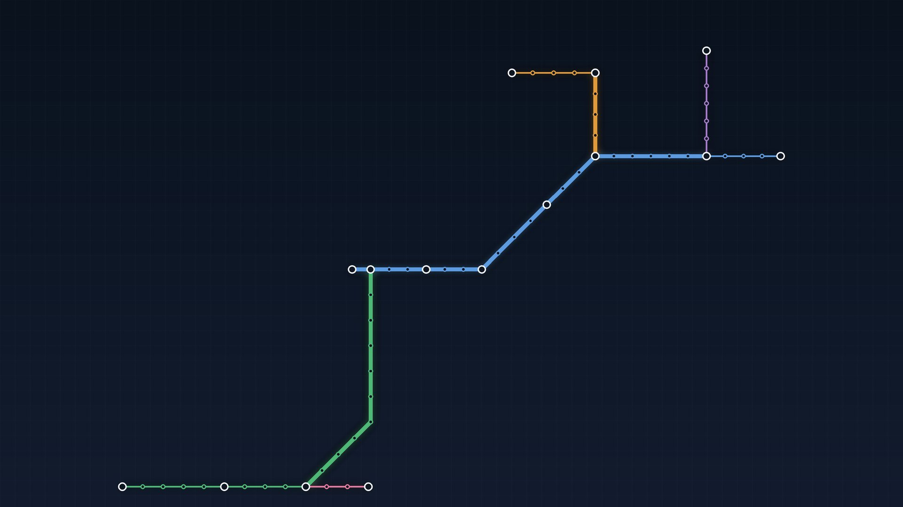
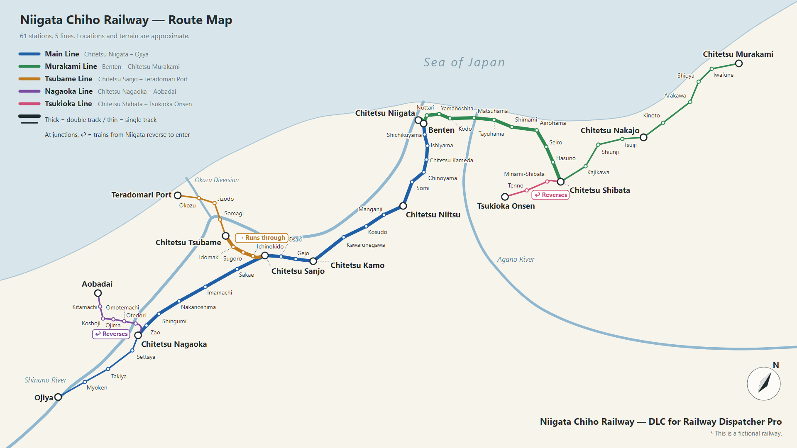
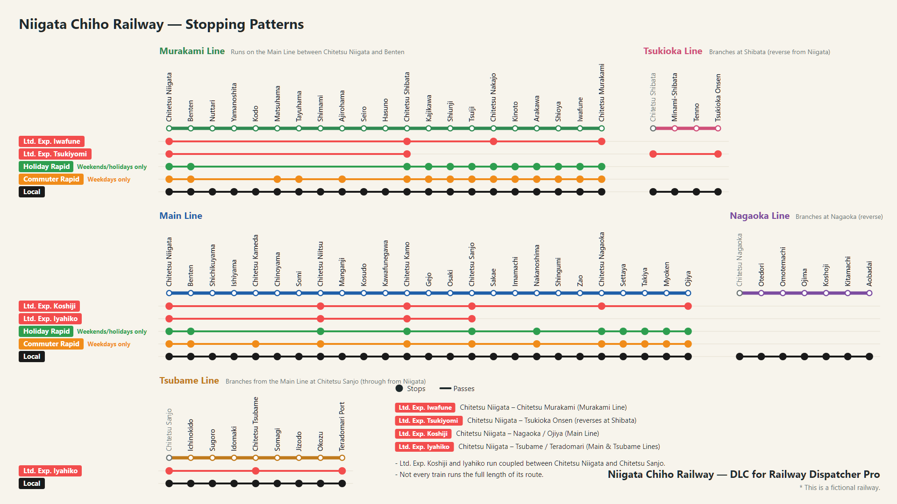
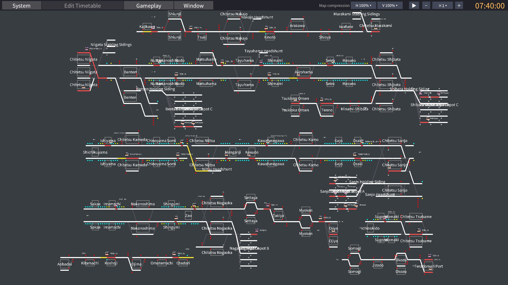
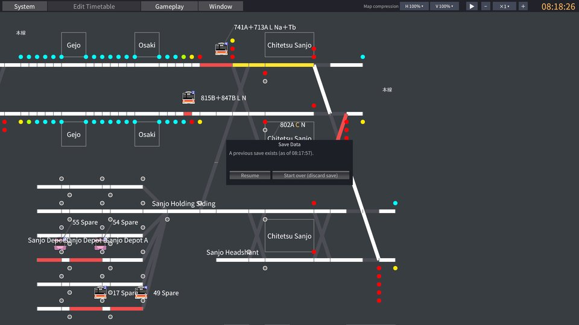
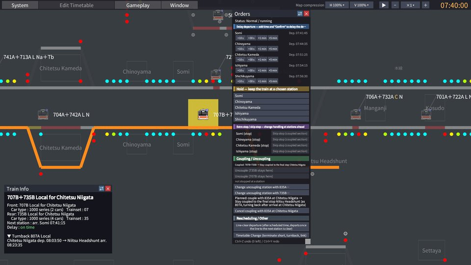
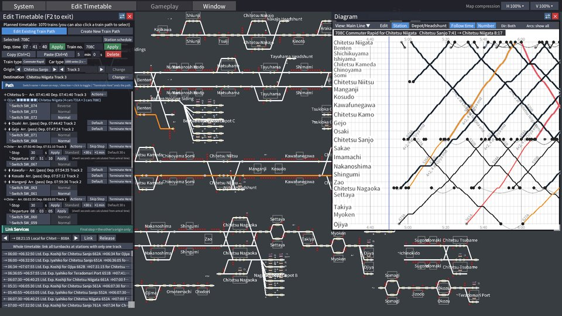
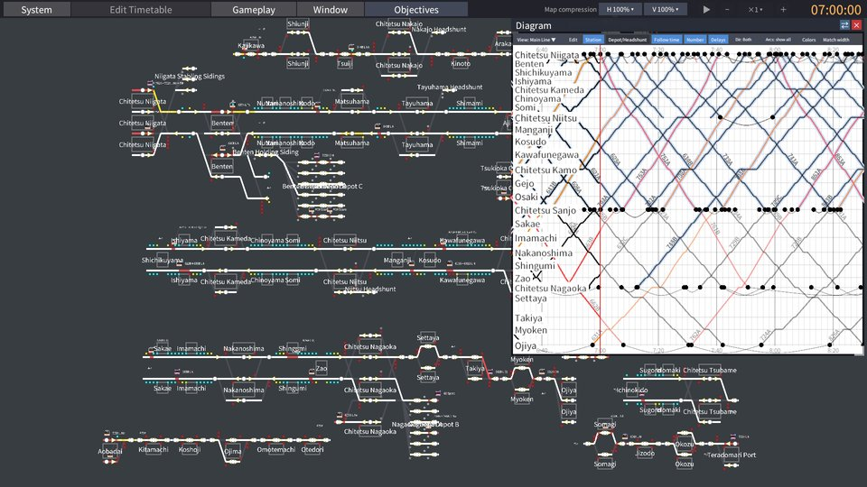

Railway Dispatcher Pro
兩班合為一班，途中再各奔前程。
行駛於新潟平原與日本海沿岸的虛構地方私鐵「新潟地方鐵道」。在5條路線、61座車站上，來調度「併結」（把兩班列車連成一班行駛）與「解聯」（在途中車站將其分開）吧。
簡介
本DLC讓你負責行駛於新潟平原與日本海沿岸的虛構地方私鐵「新潟地方鐵道」的運行調度。
把兩班列車連成一班行駛的「併結」，以及在途中車站分開、各自駛向目的地的「解聯」，在調度與運行圖製作中都能操作。
路線

折返換向與直通列車
在 v1.2 的運行圖製作中，可以把這樣的列車作為一列連續的列車來製作。
車種
收錄平日與假日兩套官方運行圖。

CTC 控制盤
路線圖中的 5 條路線、61 個車站，在遊戲中都排列在這一塊控制盤上。一邊查看號誌、道岔和列車位置，一邊調度整個路網。

併結·解聯
特急越路（往長岡、小千谷方向）與特急彌彥（往燕、寺泊港方向）在新潟～三條之間連成一班行駛，在三條解聯後各自駛向目的地。往新潟方向則在三條併結後開往新潟。早晚的普通、通勤快速中，也有4節與2節併結行駛的列車。
後到的列車以引導號誌緩緩駛入，連結在停於月台的列車後方。

對方誤點時，是讓列車繼續等待，還是取消併結讓它單獨發車？可在調度視窗的「併結·解聯」欄中決定。

在運行圖製作中，只要在運行圖上連接兩條運行線，就能製作併結列車。

情境
從假日的併結練習，到平日早尖峰接連發生障礙的關卡，收錄了新潟地方鐵道的多個情境。

產品資訊